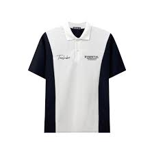
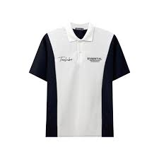

MÔ TẢ SẢN PHẨM
- Áo thun nam polo Thiết kế phối cổ vải cá sấu cotton cao cấp mềm mịn, áo phông polo nam đẹp cổ bẻ ngắn tay có đủ bảng màu cực hot
Shop Áo Polo Đào Hải Minh hân hạnh được phục vụ quý khách. Những sản phẩm mới nhất vẫn liên tục được cập nhật mỗi ngày phù hợp với nhiều lứa tuổi.
1. GIỚI THIỆU SẢN PHẨM
- Áo phông Polo nam thiết kế là sự lựa chọn hoàn hảo cho các chàng trai. Áo 3 màu trung tính rất dễ mặc, form áo vừa vặn cơ thể, thoải mái theo từng cử động.
- Màu sắc trung tính và phối màu tuyệt vời mà rất ít áo polo có tạo nên sự dễ dàng trong việc phối đồ và tạo ra cho mình nhiều phong cách khác nhau.
- Áo được làm từ chất liệu cá sấu cotton co giãn với bề mặt vải mềm mại, thấm hút mồ hôi tốt tạo cảm giác thoải mái, thoáng mát cho người mặc. Đây cũng là chất liệu dễ giặt sạch, giúp bạn tiết kiệm một khoảng thời gian đáng kể.
- Áo chống nhăn tốt, dễ giặt sạch, nhanh khô.
-Giặt tay hay giặt máy thoải mái không sợ ra màu, nhăn , mất form
2. THÔNG TIN SẢN PHẨM
- Chất liệu: 100% chất cotton cá sấu, thấm hút mồ hôi , giặt không ra màu , không mất form
- Các Size S - M - L- XL- XXL - XXXL
+ Size S : 35-47 kg cao 1m5-1m55
+ Size M : 48 - 59 kg cao 1m55 - 1m65
+ Size L : 60 - 67kg cao 1m65 - 1m80
+ Size XL : 68- 75kg cao 1m65 - 1m80
+ Size XXL : 76 - 85kg cao 1m65 - 1m85
+ Size XXXL : 86 - 95kg cao 1m65 - 1m85
- Form áo slim dễ phối đồ
3. CHÍNH SÁCH BÁN HÀNG:
- FREESHIP hoặc hỗ trợ 40K cho đơn hàng từ 99K toàn quốc
- Ngoài ra, Chúng tôi tặng mã voucher hoặc hoàn xu cho toàn bộ đơn hàng
- Cam kết chất lượng và mẫu mã sản phẩm giống với hình ảnh.
- Hoàn tiền nếu sản phẩm không giống với mô tả.
- Cam kết được đổi trả hàng trong vòng 2 ngày.